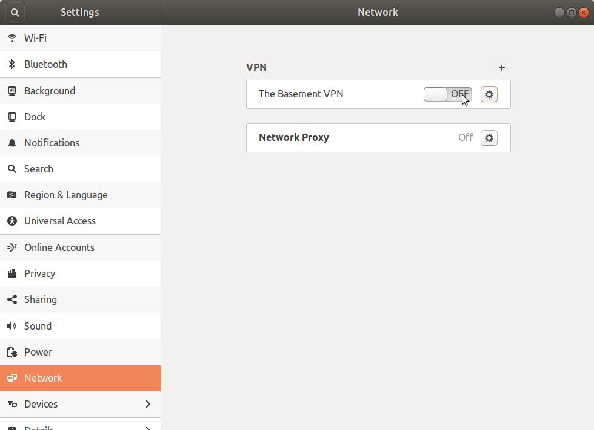

OpenVPN on Ubuntu 18.04
Introduction
I'm connecting to a remote network using OpenVPN served by an ASUS access point. I originally did it at the command line.
sudo openvpn --config client.ovpn
It turns out that this doesn't allow me to access anything outside of the network that I was connecting to. From what I can tell it's a DNS problem, but nothing I found about fixing DNS problems with OpenVPN from the command line worked. Luckily the Network Settings GUI works, but even then, it didn't work out of the box.
Initial Configuration
First, not everything you need is installed. Besides the openvpn client itself (which I had installed before trying to run it at the command line) you need some things for the network settings as well.
apt install openvpn network-manager-openvpn network-manager-openvpn-gnome
Now open the network settings.

In the window that pops up click on the + sign to add a connection.

In the window that then pops up click on Import from file... (I'm assuming you are using a config file).

Navigate to the config file, and double-click on it. In the dialog that pops up enter whatever extra information you need. In my case it was the username and password.

Click on the green 'Add' button and you should now have an entry for your VPN connection in the network settings. Click on the on switch (initially labeled 'Off') and if you're lucky it will connect.

After you click on the switch it will look like this, but read on just in case it didn't.

Fixing the Password Problem
Unfortunately for me it didn't connect. In /var/log/syslog I could see entries like this:
gnome-shell[2805]: Invalid VPN service type (cannot find authentication binary)
I don't know if the message is directly telling you this (it doesn't seem to), but it turns out that for some reason the Network Settings doesn't save your password. Look in /etc/NetworkManager/system-connections/ for a file that matches the name you gave your vpn in the settings. In my case it was just called 'client'. Open it as root in an editor.
sudo emacs /etc/NetworkManager/system-connections/client
Then change this line in the [vpn] section:
password-flags=1
to
password-flags=0
Then add this section.
[vpn-secrets] password="your-password"
Where "your-password" is your vpn password. The quotation marks around your password are required.
Now Really Connect
First restart the network manager.
sudo service network-manager restart
Now re-open the network settings and click on the switch again. With any luck this time it will stay on and you can check by going to one of the devices on your VPN network.